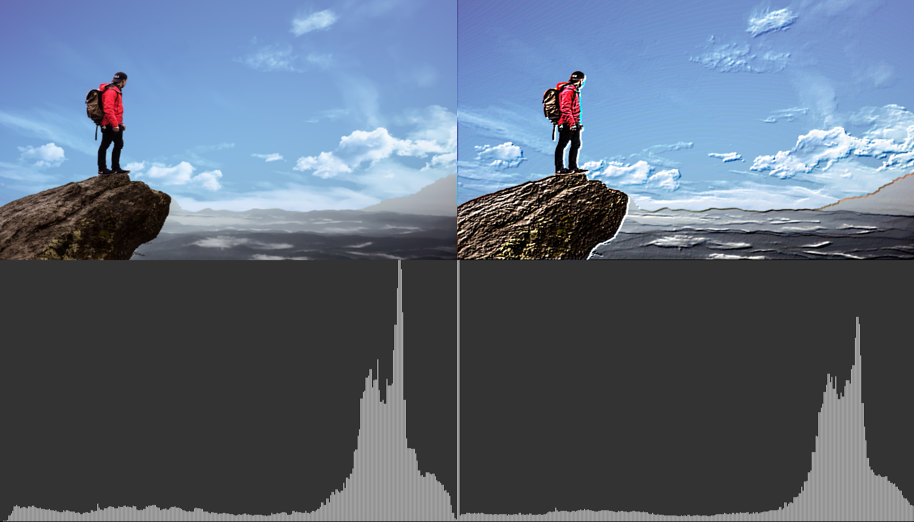

This project will give us a brief introduction to visual computing, it's main features, some implementations and (hopefully) we'll understand image and video processing basics.
As well as the visual computing class, we want to understand the digital images manipulation, creation and production, these processes will allow us to create a modern visual application, using a computer architecture. In this project, we want to study:
Use the processing 3 API and execute the following "framework":
You can check the whole process and results Here but, our results will look like this (Depending on the process):
Visual computing and image processing is a fascinating field of software AND hardware, it allow us to do data analysis, conversion and transformation for most of data nowadays (video and images) by doing some operations inside each pixel.